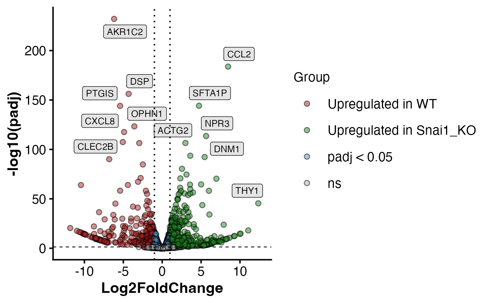

Plot volcano plot from a geneda object. Requires that you
have ran
SetDEGs on your object following differential expression in DESeq2.
Arguments
- object
A
genedaobject containingDEGsfromSetDEGsmethod- assay
The DEG slot to use for visualization
- alpha
Threshold for adjusted p-values (padj column from
DESeq2)- l2fc
Absolute value log2Fold-change magnitude threshold (log2FoldChange column)
- den
Denominator (reference level for comparison, num vs. den). If
NULL, the legend uses "denominator".- num
Numerator (numerator level for comparison, num vs. den). If
NULL, the legend uses "numerator".- title
Optional character vector of what plot should be titled.
Details
Thresholds are inclusive (padj <= alpha, |log2FoldChange| >= l2fc),
matching FilterDEGs(). Genes with a missing log2FoldChange or padj
are not plotted.
Examples
data(Snail1KO)
counts <- as.matrix(Snail1KO$rawCounts)
counts <- counts[rowSums(counts >= 10) >= 3, ]
meta <- Snail1KO$metadata
rownames(meta) <- meta$Sample
meta$Genotype <- factor(meta$Genotype, levels = c("WT", "Snai1_KO"))
norm <- log2(t(t(counts) / colSums(counts)) * 1e6 + 1)
obj <- GenEDA(normalized = norm, metadata = meta, counts = counts)
# Differential expression with DESeq2 (Snai1_KO vs WT)
dds <- DESeq2::DESeqDataSetFromMatrix(counts, meta, design = ~Genotype)
dds <- DESeq2::DESeq(dds, quiet = TRUE)
res <- as.data.frame(DESeq2::results(dds))
obj <- SetDEGs(obj, res, assay = "KO_vs_WT")
PlotVolcano(obj,
assay = "KO_vs_WT", alpha = 0.05, l2fc = 1,
den = "WT", num = "Snai1_KO"
)
